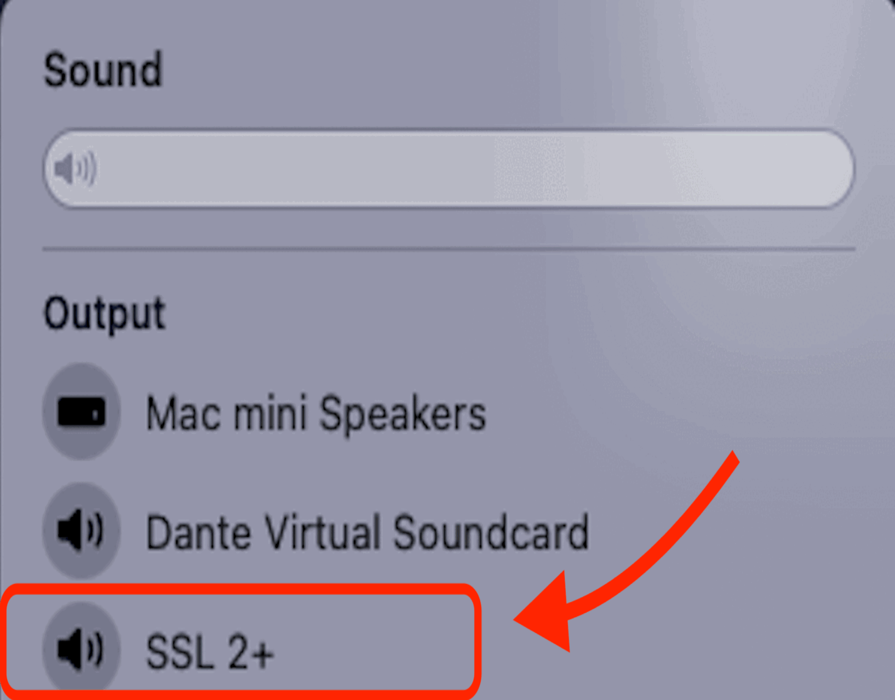

Room 779
Sound Setup
Room PC

Sound
- On the podium, there is a black panel labeled Extron. Tap the screen to wake it up and press the power button.
- Tap the button labeled "PC" and make sure "MUTE" is unselected.
- On another EXTRON box under the podium, make sure "5" is selected.
- Click on the speaker icon in the menu bar at the top right corner, ensure that "ExtronScalerD" is the selected device (it will be highlighted blue when selected).
- Adjust the volume by tapping the up/down arrow on the EXTRON panel.
- When done using the room, click on "DISPLAY OFF" to turn off the system and switch off the Furman box below the podium.
Laptop

TO CONNECT A LAPTOP/iPhone
- On the podium, there is a black panel labeled Extron. Tap the screen to wake it up and press the power button.
- Plug in the HDMI-USB-C or any of the other available adapters for the device you are trying to connect.
- Press the button labeled "LAPTOP" and make sure "MUTE" is unselected.
- Adjust the volume by tapping the up/down arrow on the EXTRON panel.
- On the menu bar in the top right corner (if a MacBook), ensure that "ExtronScalerD" is the selected device (it will be highlighted blue when selected).
External Sound Source

TO CONNECT AN EXTERNAL SOUND SOURCE (NO VIDEO)
- On the podium, there is a black panel labeled Extron.
- Connect your device to the aux cable attached to the podium.
- Tap the button labeled "AUXILIARY" and make sure the "MUTE" Button is unselected.
- (If using a MacBook) Click on the Control Center icon in the menu bar at the top right corner, under "Sound", ensure that "External Headphones" is the selected device (the circle to the left will be blue if so, click it if not).
- (If using a Windows laptop) Click on the Speaker icon in the menu bar at the lower right corner, ensure that the device start with "Headphones" is the selected device.
- Click the Volume up and down buttons on the EXTRON panel on the podium to adjust the volume.
- When done, click "DISPLAY OFF" to shut down the system.
- Turn the power off on the Furman Box at the bottom of the podium.
Projector Setup
Room PC
Video/Projection (Podium PC)
- On the EXTRON panel on the podium, press "DISPLAY ON" to project.
- On the computer, open system settings (in the dock at the bottom of the screen), click on displays.
- If you would like to mirror the displays (such that the screen on the podium and the wall are the same) make sure to select Mirror for DELL P2418D. If you would like to extend the displays (such that the two screens are separate), make sure to select Extended display.
- In the Arrange window, you can choose the position of the monitors relative to each other, which will allow you to move your mouse between them accurately.
- When done using the projector, click on "DISPLAY OFF" on the Extron panel on the podium and the system should shut down.
- Turn the power off at the bottom of the podium.
Laptop
Video/Projection (With Mac)
- On the EXTRON panel on the podium, press "DISPLAY ON" to project.
- On your laptop (if you have a MacBook), open system preferences, click on displays, then select the arrangement tab.
- (If you have a MacBook), open system settings (in the dock at the bottom of the screen), click on the displays.
- If you would like to mirror the displays (such that the screen on the podium and on the wall are the same) make sure to select Mirror for "ExtronScalarD". If you would like to extend the displays (such that the two screens are separate), click stop mirroring and then select "Extended Display".
- When done using the projector, click on "DISPLAY OFF" on the Extron panel on the podium and the system should shut down.
- Turn the power off on the Furman box below the podium.